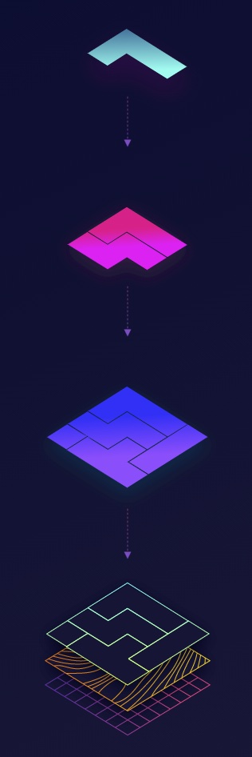

组件驱动的用户界面
使用模块化的组件来进行开发和设计. UI 界面“自上而下”开始构建, 从基本组件开始, 然 后逐步组合以组装成为一个视图.
为什么使用组件?
现代用户界面越来越复杂, 远超过去. 人们期望更加个性化的体验, 并且在设备之间还可以 保证统一的体验. 这意味前端开发和设计需要嵌入大量的逻辑在 UI 界面中.
随着应用的增长, UI 变得越来越重. 大型的 UI 项目很容容易出问题, debug 非常困难, 需要花费大量的时间. 需要把他们拆分成模块构建成强壮的弹性的 UI 组件.
自建可以在内部封装交互逻辑, 让这些状态和应用业务逻辑脱离. 这样, 可以分解复杂的视 图到简单的组件中. 每一个组件有一个定义好的完整的 API, 和一系列的设置好的状态, 这 样可以让组件被拆解和使用在不同的 UI 之中.
历史: 软件工程师Tom Coleman 在[2017](Component-Driven Development 年描述了 UI 开发中引入组件架构的过程. 关于模块化 UI 的概念来自于软件开发的其它 平面, 如: 微服务和容器化. 同样原理的可以在 20 世界初期的工业批量生产中出现.
什么是组件
组件是标准化, 可交互的 UI 构建块. 他们表现了 UI 的展示和功能. 向乐高积木一样, 乐 高可以构建出各种东西, 从城堡到星际飞船, 组件可以被组合并增加新的特性.
如何使用组件驱动

- 构建组件
构建每一个独立的组件并且定义他们自己相关的状态. 从最基本的开始
Avatar Button Input Tooltip
- 组件组合
组合小的组件组合在一起并添加新的功能, 逐步添加组件的复杂度.
Form Header List Table
- 汇合成页面
使用复合的组件组合成为一个复杂的页面. 使用模拟数据和模拟页面来出发一些很难碰到的 状态和边界.
Home page Setting page Profile page
- 集成页面到项目中
添加页面到 App 中并连接数据并结合业务逻辑. 这就是 UI 和后端 API 和服务做连接.
Web app Marketing site Docs site
好处
- 质量 在不同的场景中验证 UI 的工作情况, 分离的组件和相关的状态可以很好的进 行测试
- 耐用 一些小 bug 被限制在组件层面, 这样更好的测试, 并且被限制在一个很低的层 面.
- 速度 可以从 UI 组件库或设计系统中, 使用已经构成的组件快速的构建页面.
- 效率 并行开发与设计, 被分解的组件, 可以在不同的小组之间分享和使用.
那些 UI 不是组件驱动的
- 基于页面的 开发与设计过程处理一组页面为一个 website. 不需要设计页面间通用 的组件.
- 工具生成的页面 像
Wordpress和Drupal一样工具被设计用来展示文档. 后端框架 向Rails,Django和PHP处理 UI 重用作为外部物品, 并且阻止了组件的重用.
互相补充与影响
设计系统: 设计更加的贴近用户的使用, 包含 UI 的设计模式的文档与资源(Sketch, Figma, etc), 设计原则, 管理和组件库.
JAMStack: 一种通过预渲染的方式构建好页面并通过 CDN 分发. JAMStack 站点的 UI 需要通过组件化的 Javascript 框架来构建.
敏捷开发: 一种可促进焦段反馈循环和快速迭代的方法. 组件可以通过重用来帮助团队 快速的构建和发布. 已更好的适应用户需求.